library("tidyverse")06_analysis_2
This file provides a detailed analysis of the Mice Protein Expression dataset. It includes generating heatmaps to visualize protein expression across all samples, different classes, and genotypes. The analysis intends to identify proteins with the highest variability and those showing the largest differences between groups. Statistical methods like t-tests are applied to highlight significant protein variations, providing insights into the dataset’s underlying patterns and group-specific differences.
Load libraries
Loading data
first_path <- "~/projects/R_project"
file_path <- "data/03_dat_aug.tsv"
file_path <- file.path(first_path,
file_path)
df_aug <- read_tsv(file = file_path)
df <- df_augHeatmap of proteins
Heatmap #1 - All Proteins with all samples
Preparing data for heatmap visualization - changing to the long data, using pivot_longer
protein_data_long <- df |>
select(ends_with("_N"),
MouseID) |>
pivot_longer(-MouseID,
names_to = "Protein",
values_to = "Expression")
ggplot(data = protein_data_long,
mapping = aes(x = Protein,
y = MouseID,
fill = Expression)) +
geom_tile() +
scale_fill_gradient2(low = "blue",
mid = "white",
high = "red",
midpoint = 0) +
theme_minimal() +
theme(axis.text.x = element_text(size = 5,
angle = 45,
hjust = 1),
axis.text.y = element_blank()) +
labs(title = "Heatmap of Protein Expression (All Mice)",
x = "Proteins",
y = "Samples - MouseID",
fill = "Expression")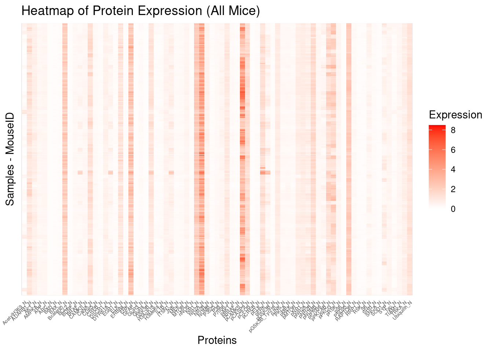
The plot visualizes protein expression across all mice samples, but due to a large number of samples, the plot lacks group-specific information, what makes it difficult to draw conclusions.
Heatmap #2 - proteins divided by class
Starting with the z-normalization following by min-max normalization to obtain [-1, 1]
# z - normalization
df_z <- df |>
mutate(across(ends_with("_N"),
~ scale(.) |>
as.vector()))
# min-max normalization
df <- df_z |>
mutate(across(ends_with("_N"),
~ (2 * ((. - min(.)) / (max(.) - min(.))) - 1)))# Dividing the data set into smaller groups split by class
class_data <- df |>
group_split(class)
# Transforming into long data for visualization
class_data_long <- map(class_data,
~ .x |>
select(ends_with("_N"),
MouseID) |>
pivot_longer(-MouseID,
names_to = "Protein",
values_to = "Expression")
)
# Creating heatmaps for each class
# class_data_long - .x
# class_data - .y
heatmaps <- map2(class_data_long,
class_data, ~ {
# extracting the class name for later plot title
class_name <- .y |>
pull(class)
ggplot(data = .x,
mapping = aes(x = Protein,
y = MouseID,
fill = Expression)) +
geom_tile() +
scale_fill_gradient2(low = "blue",
mid = "white",
high = "red",
midpoint = 0) +
theme_minimal() +
theme(axis.text.x = element_text(size = 5,
angle = 45,
hjust = 1),
axis.text.y = element_blank()) +
labs(title = paste("Heatmap for Class:", class_name),
x = "Proteins",
y = "MouseID",
fill = "Expression")
})
walk(heatmaps,
print)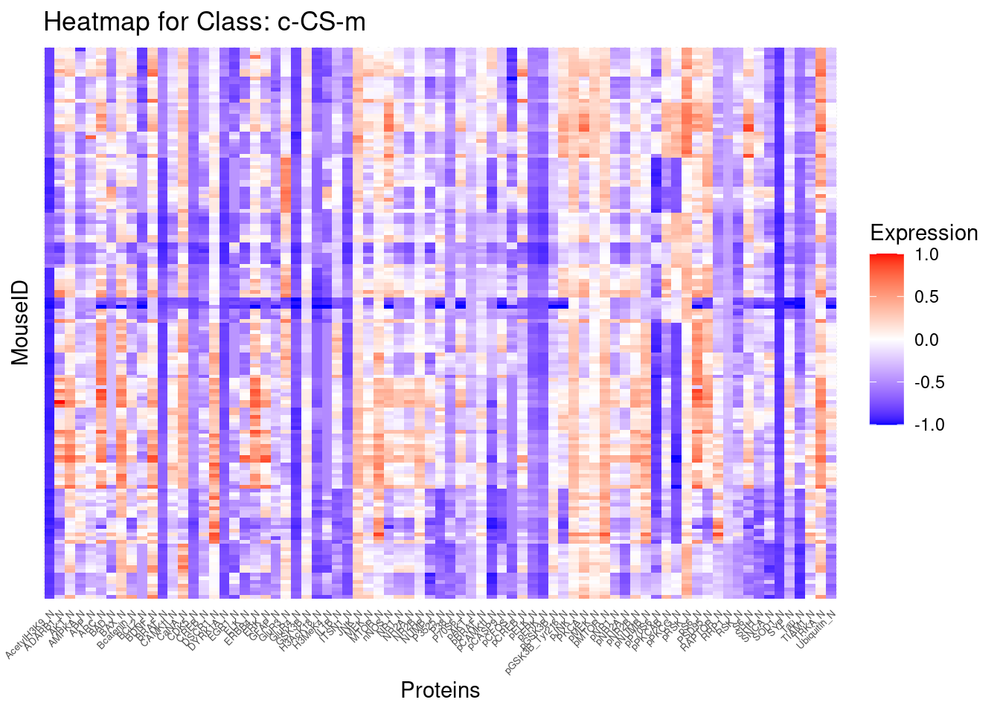
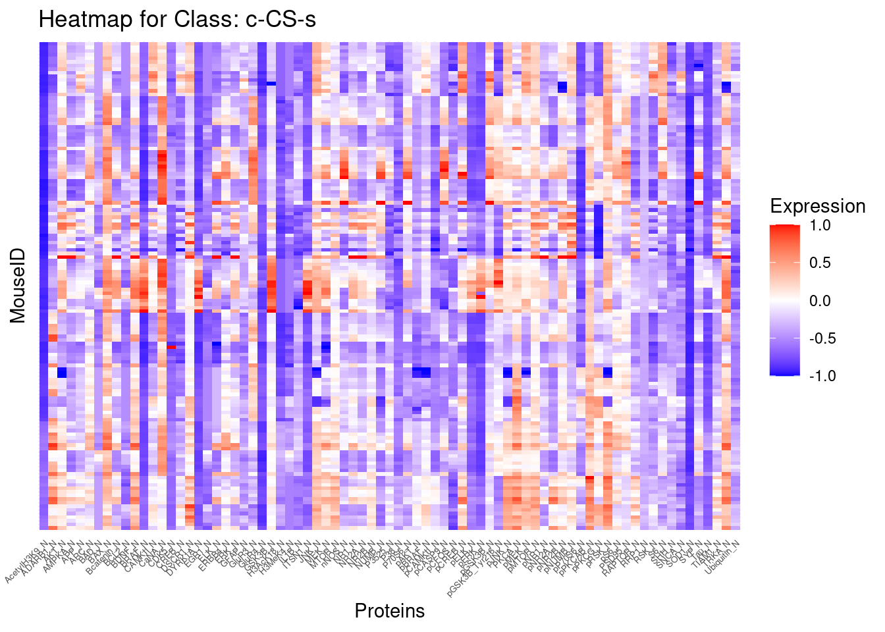
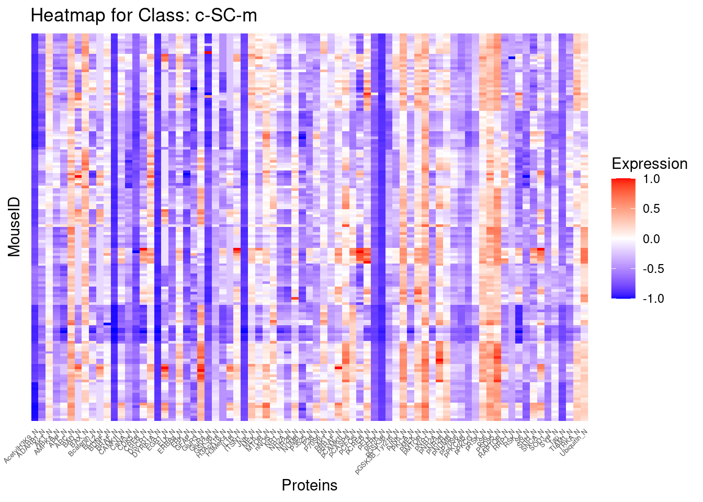
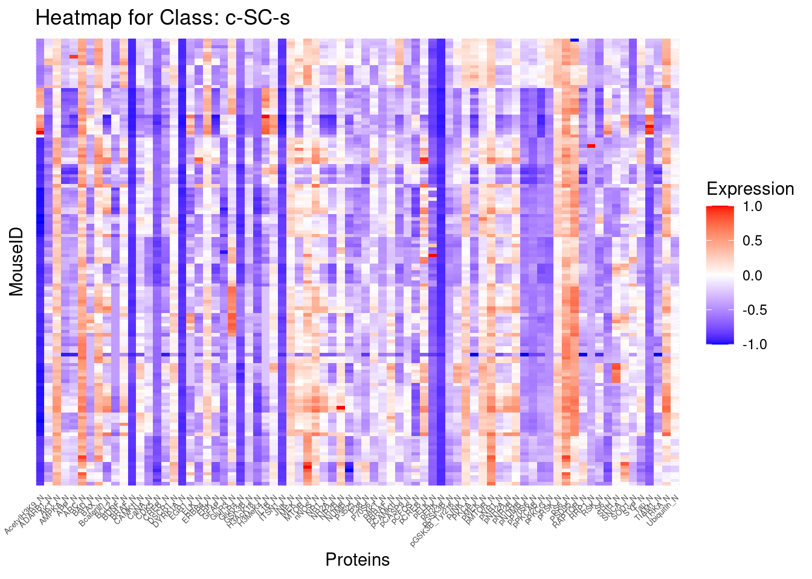
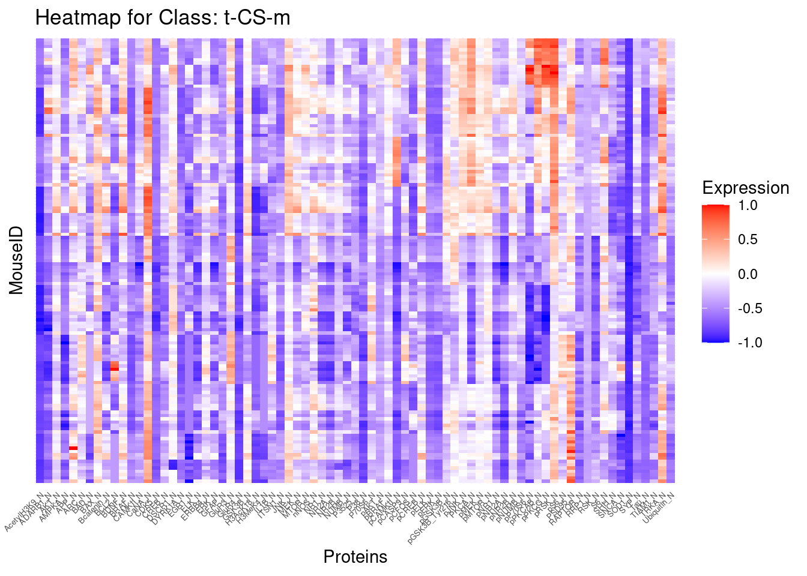
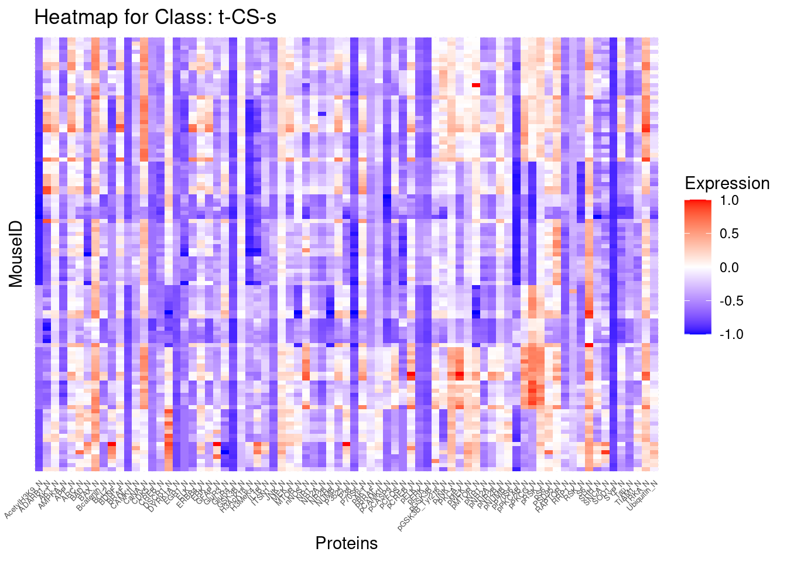
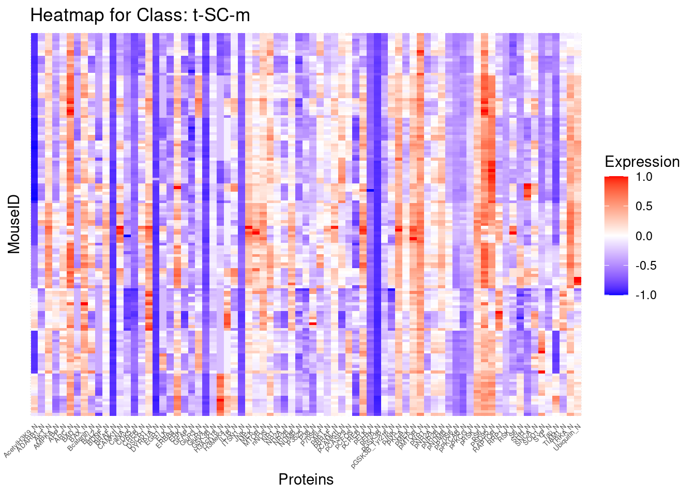
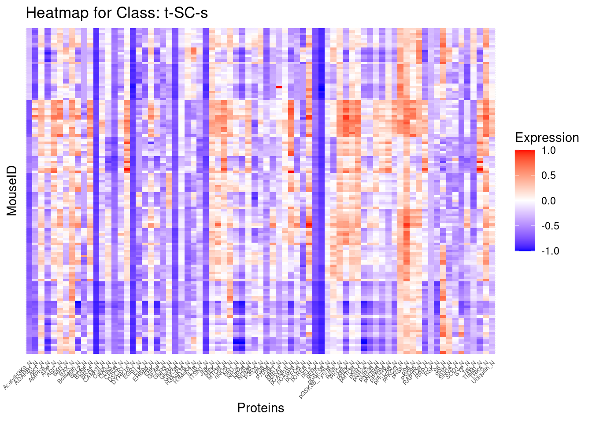
Having plots divided by class allows a clearer visualization of proteins, but it still does not highlight any noticeable patterns.
Heatmap #3 - divided by genotype
Data manipulation
trisomy_data <- df |>
filter(Genotype == 1)
control_data <- df |>
filter(Genotype == 0)
protein_columns <- colnames(df |>
select(ends_with("_N")))
trisomy_long <- trisomy_data |>
select(MouseID,
all_of(protein_columns)) |>
pivot_longer(cols = -MouseID,
names_to = "Protein",
values_to = "Expression")
control_long <- control_data |>
select(MouseID,
all_of(protein_columns)) |>
pivot_longer(cols = -MouseID,
names_to = "Protein",
values_to = "Expression")Plots
ggplot(data = trisomy_long,
mapping = aes(x = Protein,
y = MouseID,
fill = Expression)) +
geom_tile() +
scale_fill_gradient2(low = "blue",
mid = "white",
high = "red",
midpoint = 0) +
theme_minimal() +
theme(
axis.text.x = element_text(angle = 45,
hjust = 1,
size = 4),
axis.text.y = element_blank()
) +
labs(
title = "Heatmap of Protein Expression (Trisomy)",
x = "Proteins",
y = "Samples - MouseID",
fill = "Expression"
)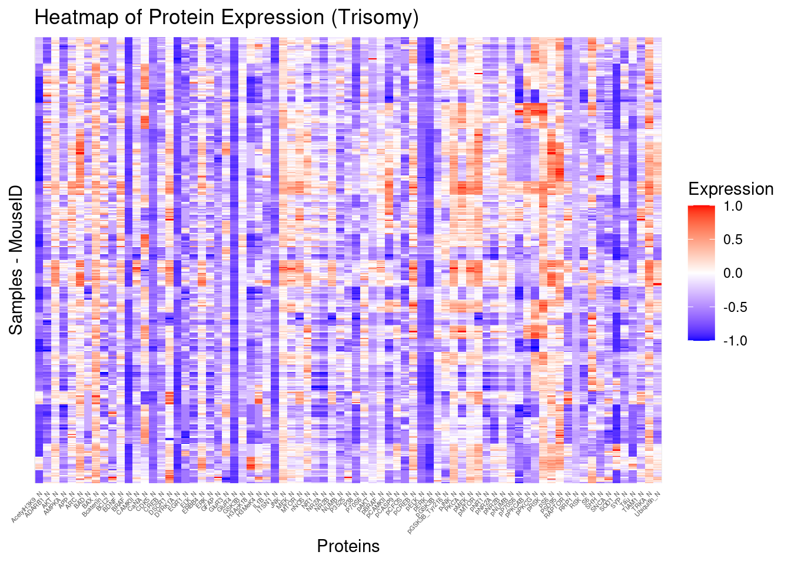
ggplot(data = control_long,
mapping = aes(x = Protein,
y = MouseID,
fill = Expression)) +
geom_tile() +
scale_fill_gradient2(low = "blue",
mid = "white",
high = "red",
midpoint = 0) +
theme_minimal() +
theme(
axis.text.x = element_text(angle = 45,
hjust = 1,
size = 4),
axis.text.y = element_blank()
) +
labs(
title = "Heatmap of Protein Expression (Control)",
x = "Proteins",
y = "MouseID",
fill = "Expression"
)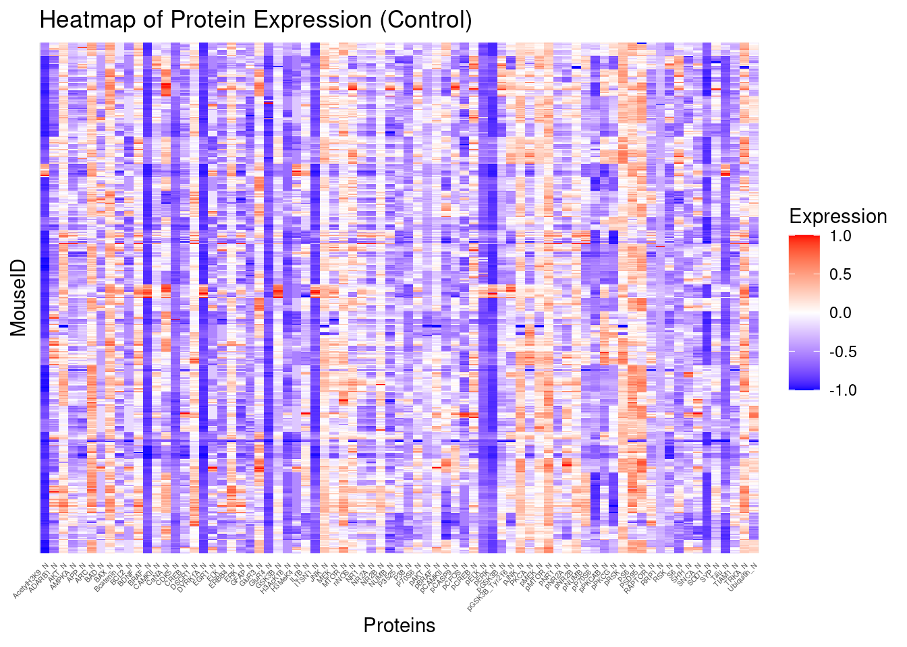
Direct comparison between the Trisomy and the Control.
Overall the created heatmaps of Samples vs Proteins are not as informative as expected. There are few conclusions we can draw from them, ex. there is a clear impact coming from the Stimulation factor.
Heatmap #4 among proteins
All proteins
correlation_matrix <- df |>
select(ends_with("_N")) |>
cor()
correlation_long <- correlation_matrix |>
as_tibble(rownames = "Protein1") |>
pivot_longer(-Protein1,
names_to = "Protein2",
values_to = "Correlation")
ggplot(correlation_long, aes(x = Protein1,
y = Protein2,
fill = Correlation)) +
geom_tile() +
scale_fill_gradient2(low = "blue",
mid = "white",
high = "red",
midpoint = 0) +
theme_minimal() +
theme(axis.text.x = element_text(size = 5,
angle = 45,
hjust = 1),
axis.text.y = element_text(size = 5,
angle = 0,
hjust = 1)) +
labs(title = "Heatmap of Protein Correlations (All Samples)",
x = "Protein name",
y = "Protein name",
fill = "Correlation")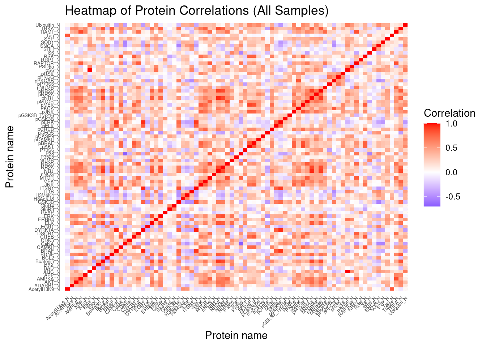
This heatmap provides with an overview on the relationships between all protein pairs, which could be useful for pathway analysis.
Proteins per class
Dividing the data by class and visualizing the heatmap can show us potential interactions between proteins among certain groups
corr_data_long <- map(class_data,
~ .x |>
select(ends_with("_N")) |>
cor() |>
as_tibble(rownames = "Protein1") |>
pivot_longer(-Protein1,
names_to = "Protein2",
values_to = "Correlation")
)
corr_heatmaps <- map2(corr_data_long,
class_data, ~ {
class_name <- .y |>
pull(class)
ggplot(data = .x,
mapping = aes(x = Protein1,
y = Protein2,
fill = Correlation)) +
geom_tile() +
scale_fill_gradient2(low = "blue",
mid = "white",
high = "red",
midpoint = 0) +
theme_minimal() +
theme(axis.text.x = element_text(size = 5,
angle = 45,
hjust = 1),
axis.text.y = element_text(size = 5)) +
labs(title = paste("Heatmap for Class:", class_name),
x = "Protein 1",
y = "Protein 2",
fill = "Correlation")
})
walk(corr_heatmaps,
print)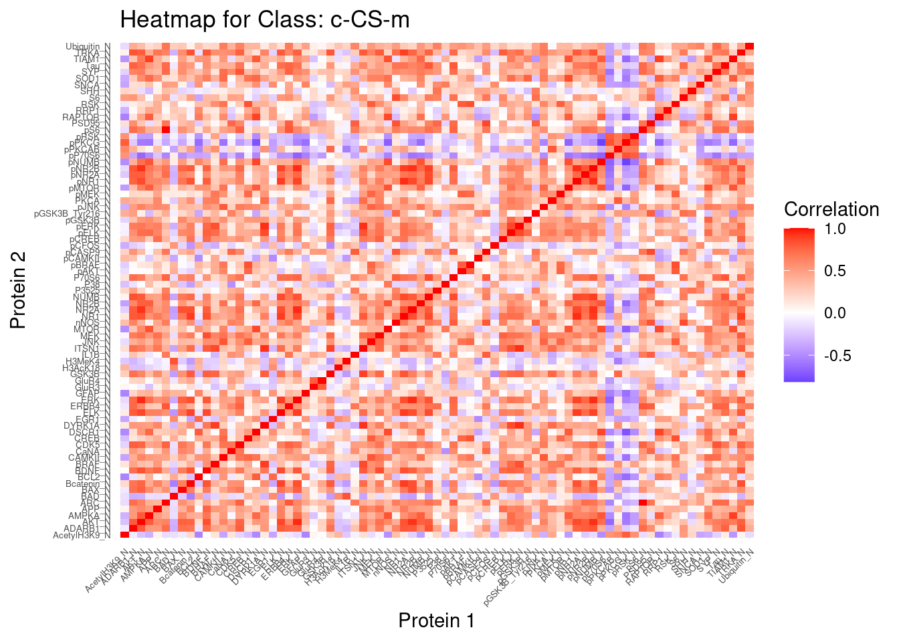
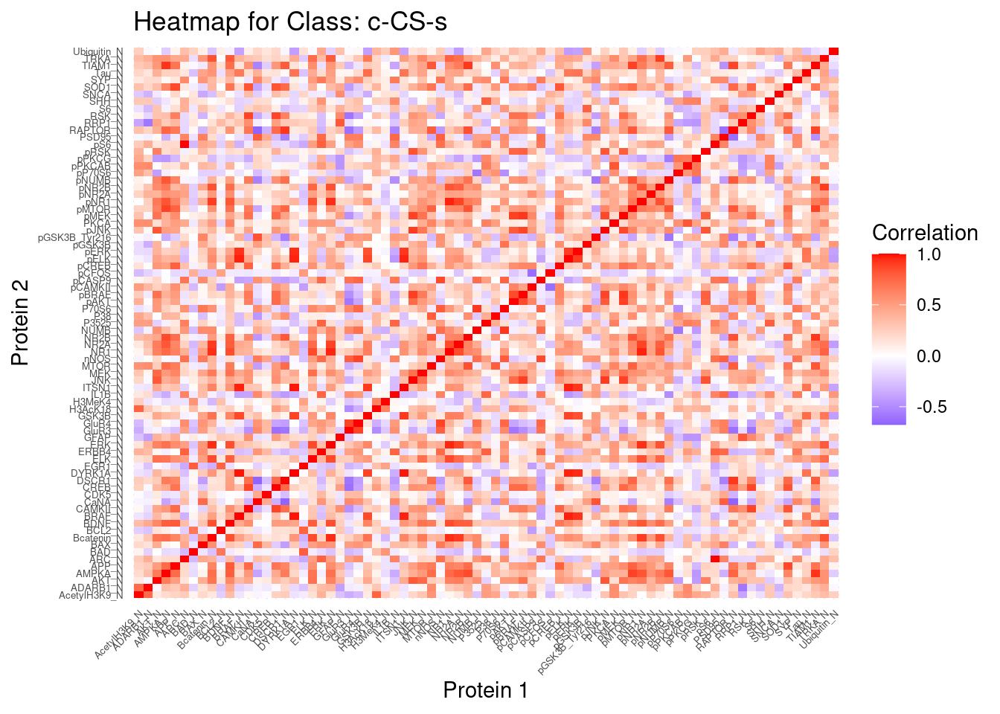
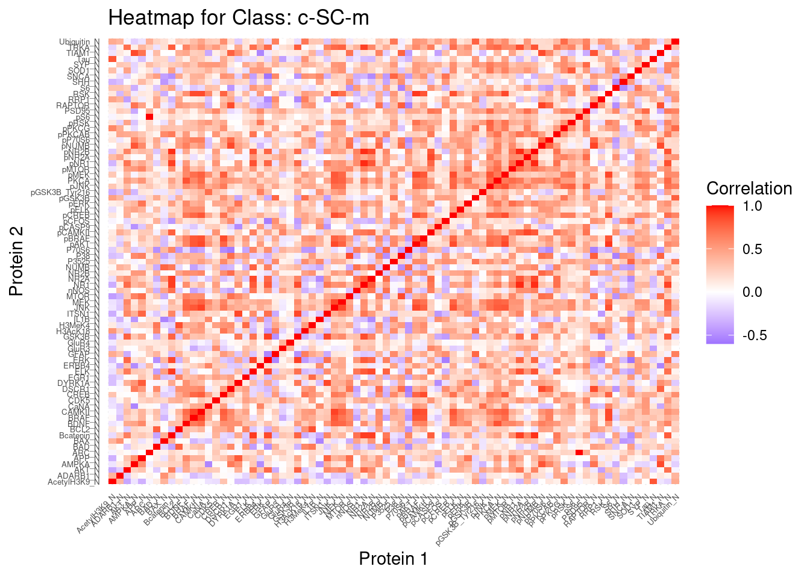
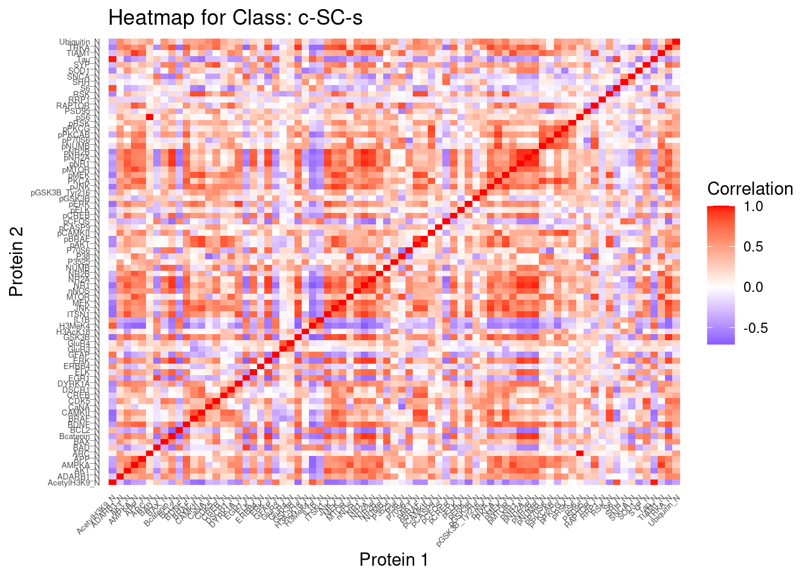
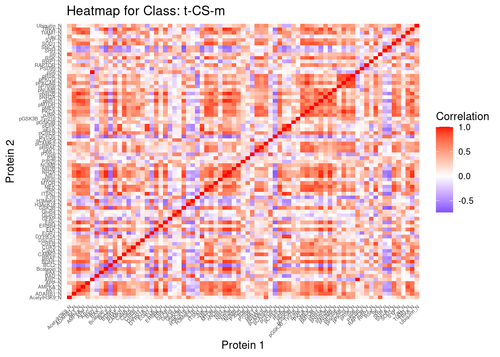
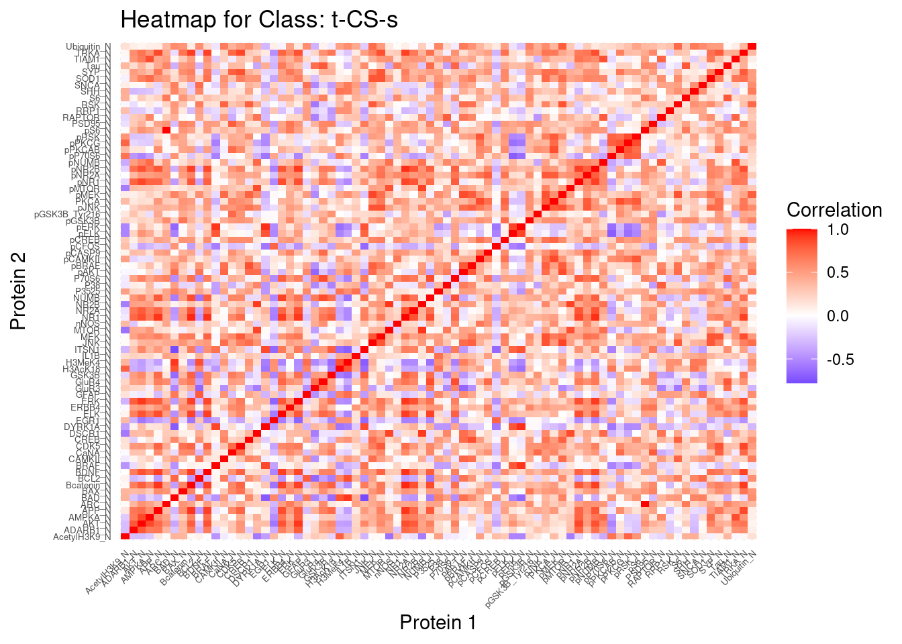
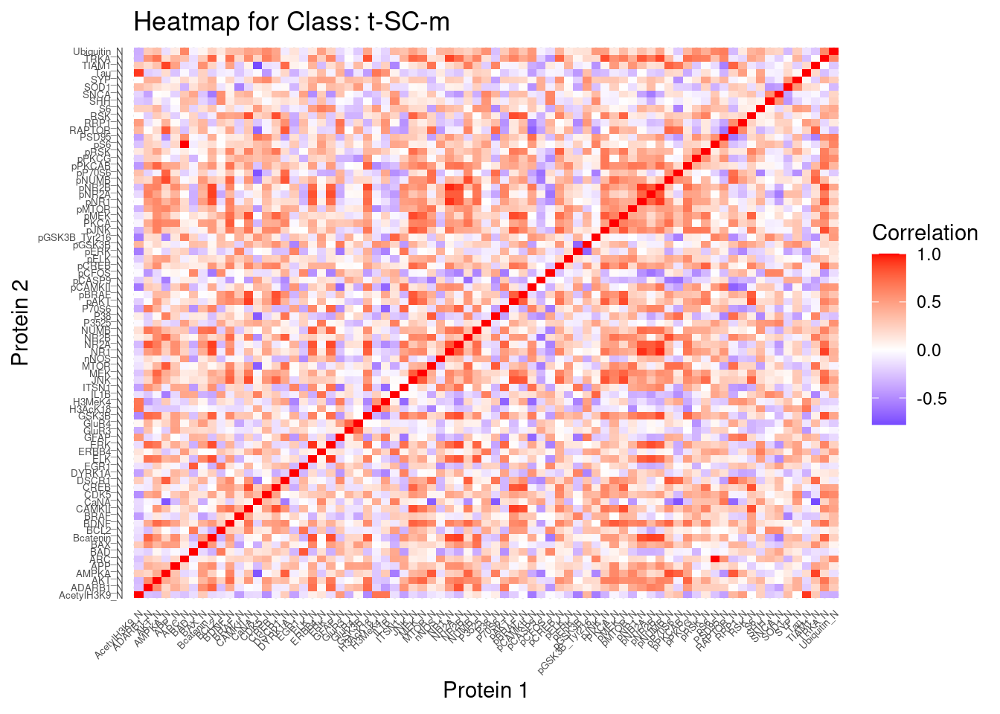
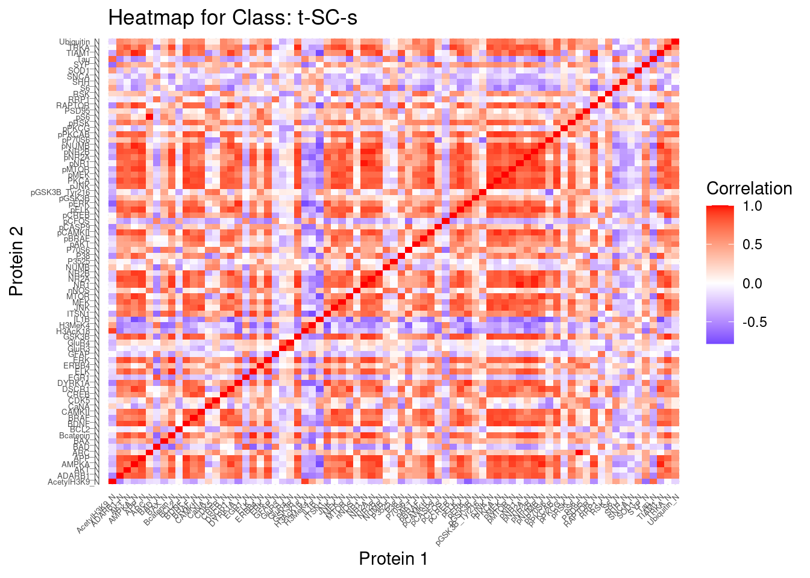
Heatmaps repeatedly show impact of stimulus to protein expression. We can also start to recognize certains groups of proteins that show higher correlations.
Proteins per genotype
gen_data <- df |>
group_split(Genotype)
corr_gen_data_long <- map(gen_data,
~ .x |>
select(ends_with("_N")) |>
cor() |>
as_tibble(rownames = "Protein1") |>
pivot_longer(-Protein1,
names_to = "Protein2",
values_to = "Correlation")
)
corr_heatmaps <- map2(corr_gen_data_long,
gen_data, ~ {
genotype_name <- .y |>
pull(Genotype)
class_name <- ifelse(genotype_name == 1,
"Trisomy",
"Control")
ggplot(data = .x,
mapping = aes(x = Protein1,
y = Protein2,
fill = Correlation)) +
geom_tile() +
scale_fill_gradient2(low = "blue",
mid = "white",
high = "red",
midpoint = 0) +
theme_minimal() +
theme(axis.text.x = element_text(size = 3,
angle = 45,
hjust = 1),
axis.text.y = element_text(size = 3)) +
labs(title = paste("Heatmap for Class:", class_name),
x = "Protein 1",
y = "Protein 2",
fill = "Correlation")
})
walk(corr_heatmaps,
print)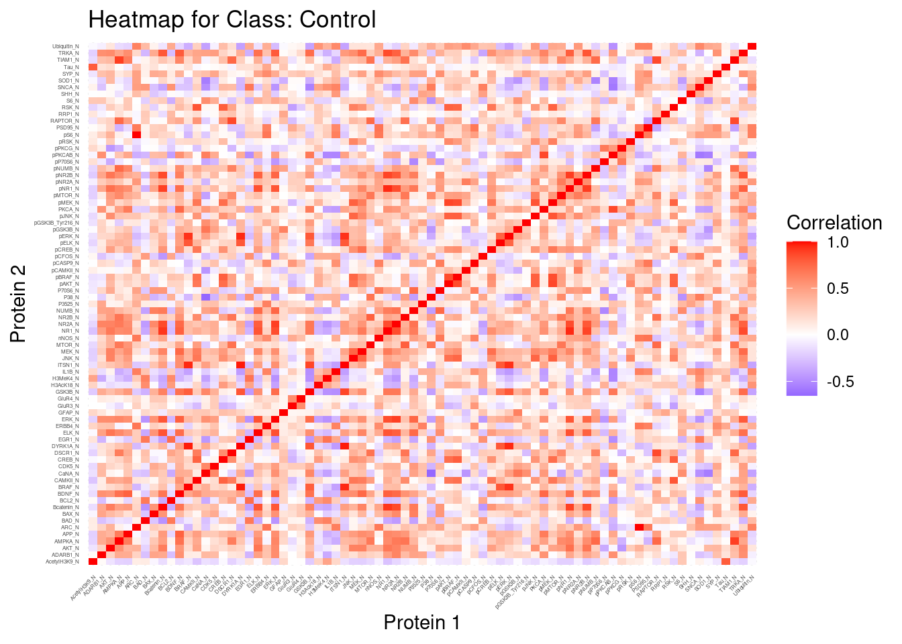
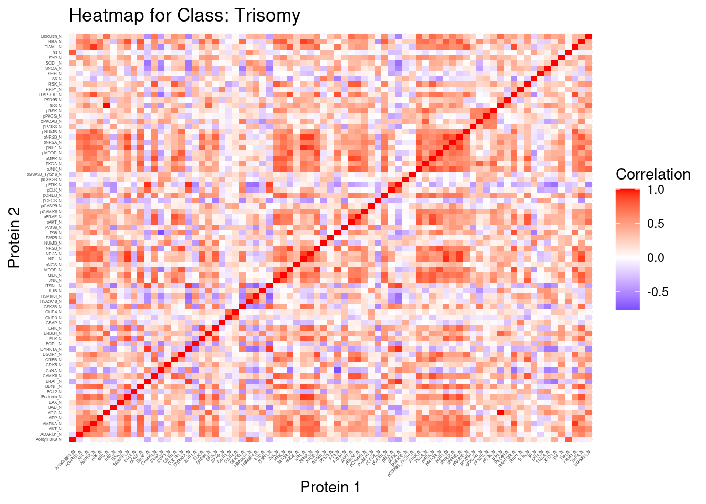
Having obtained the above results, we can visually select areas on the heatmap which show high correlations for example between pNR1_N and pNR2A.
Analysis
Proteins with the largest differences in correlation might serve as biomarkers for distinguishing trisomy from control.
Correlation in proteins, by genotype
combined_corr_data <- bind_rows(corr_gen_data_long,
.id = "Genotype")
gen_corr_list <- combined_corr_data |>
filter(Protein1 != Protein2) |>
distinct(Protein1,
Protein2,
.keep_all = TRUE) |>
arrange(desc(Correlation))
gen_corr_list# A tibble: 5,852 × 4
Genotype Protein1 Protein2 Correlation
<chr> <chr> <chr> <dbl>
1 1 ARC_N pS6_N 1
2 1 pS6_N ARC_N 1
3 1 DYRK1A_N ITSN1_N 0.976
4 1 ITSN1_N DYRK1A_N 0.976
5 1 DYRK1A_N BRAF_N 0.974
6 1 BRAF_N DYRK1A_N 0.974
7 1 DYRK1A_N pERK_N 0.953
8 1 pERK_N DYRK1A_N 0.953
9 1 ITSN1_N BRAF_N 0.952
10 1 BRAF_N ITSN1_N 0.952
# ℹ 5,842 more rowsAnalytical calculations provide us with pairs with the highest correlations, which match the conclusions drawn from the previous heatmap.
Highest variability in proteins
Trying to distinguish the proteins with the biggest sd
most_variable_proteins <- df |>
select(ends_with("_N")) |>
summarise(across(everything(),
sd,
na.rm = TRUE)) |>
pivot_longer(cols = everything(),
names_to = "Protein",
values_to = "SD") |>
arrange(desc(SD)) |>
slice_head(n = 10)Warning: There was 1 warning in `summarise()`.
ℹ In argument: `across(everything(), sd, na.rm = TRUE)`.
Caused by warning:
! The `...` argument of `across()` is deprecated as of dplyr 1.1.0.
Supply arguments directly to `.fns` through an anonymous function instead.
# Previously
across(a:b, mean, na.rm = TRUE)
# Now
across(a:b, \(x) mean(x, na.rm = TRUE))most_variable_proteins# A tibble: 10 × 2
Protein SD
<chr> <dbl>
1 pCAMKII_N 0.423
2 pPKCG_N 0.416
3 CaNA_N 0.411
4 S6_N 0.397
5 pPKCAB_N 0.386
6 PKCA_N 0.369
7 ADARB1_N 0.360
8 Bcatenin_N 0.340
9 SOD1_N 0.339
10 pCREB_N 0.337Biggest differences between the groups
Trying to identify the proteins that differ the most between the trisomy and the control group
group_means <- df |>
group_by(Genotype) |>
summarise(across(ends_with("_N"),
mean,
na.rm = TRUE)) |>
pivot_longer(cols = -Genotype,
names_to = "Protein",
values_to = "MeanExpression")
protein_differences <- group_means |>
pivot_wider(names_from = Genotype,
values_from = MeanExpression,
names_prefix = "Genotype_") |>
mutate(Difference = abs(Genotype_1 - Genotype_0)) |>
arrange(desc(Difference)) |>
slice_head(n = 10)
protein_differences# A tibble: 10 × 4
Protein Genotype_0 Genotype_1 Difference
<chr> <dbl> <dbl> <dbl>
1 APP_N -0.300 0.0234 0.323
2 S6_N -0.265 0.00759 0.273
3 pPKCG_N -0.311 -0.0837 0.228
4 GluR3_N 0.0838 -0.0810 0.165
5 H3AcK18_N -0.614 -0.462 0.153
6 pNR2A_N -0.141 -0.293 0.152
7 Tau_N -0.619 -0.471 0.148
8 AcetylH3K9_N -0.828 -0.699 0.129
9 MTOR_N 0.115 -0.00837 0.124
10 SYP_N -0.195 -0.315 0.121Given the results, we can distinguish few proteins, like S6_N or pPKCG_N that could imply having impact on the existence of trisomy in mice.